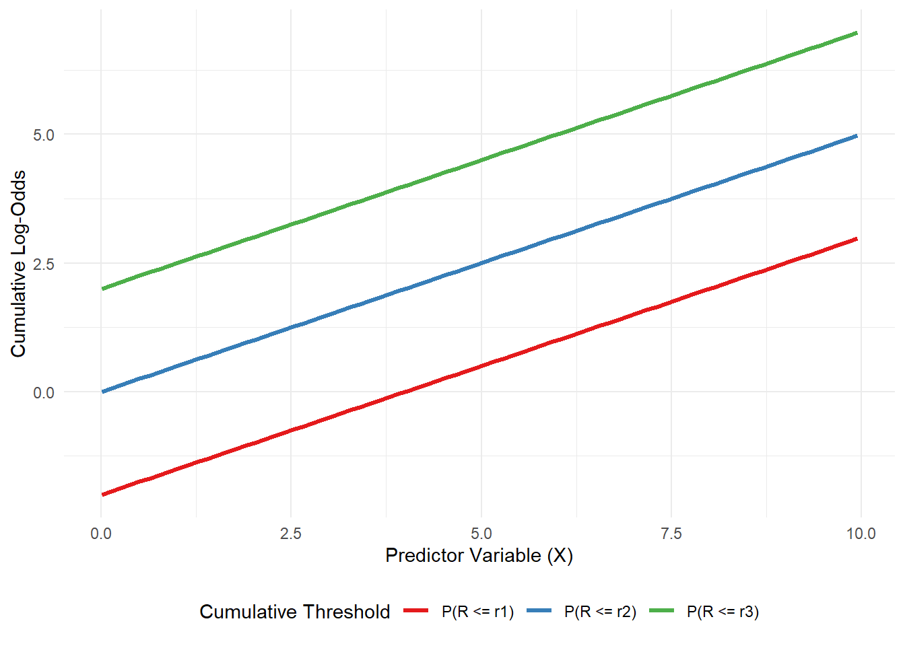
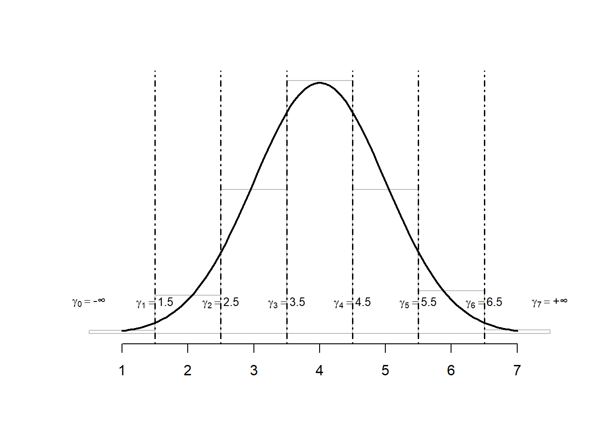
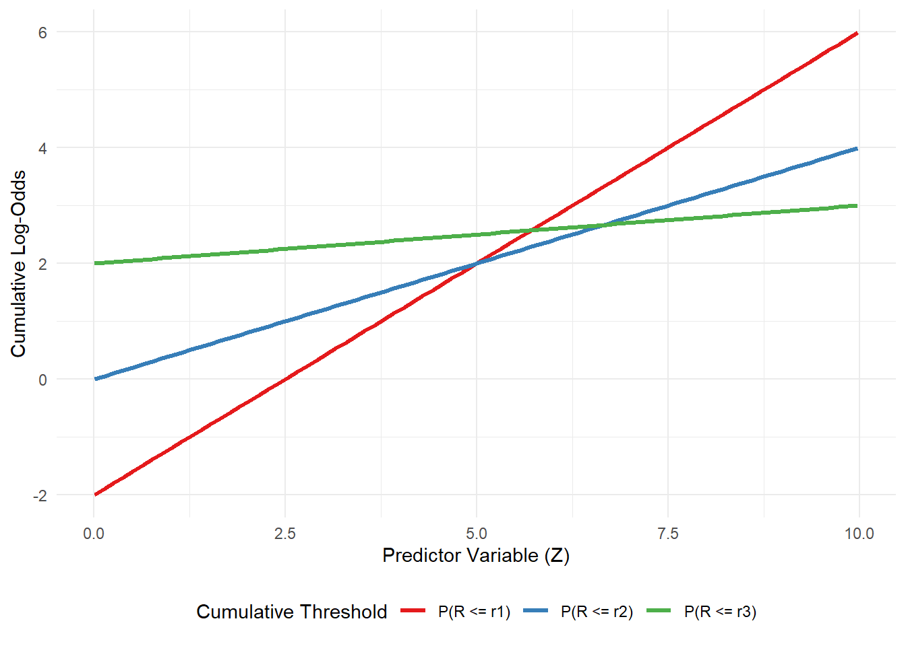

Classical Models for Ordinal Data
Limitations of most commonly used models
Limitations of Linear Regression:
Linear regression is designed for dependent variables that are continuous and can take any value within a range (or at least have a large number of distinct, equally-spaced values). Applying linear regression to ordinal data involves treating the ordered categories as if they were numerical scores with equal intervals between them.
Ignores Non-Interval Nature: The primary issue is that linear regression assumes that the difference between category 1 and 2 is the same as the difference between category 2 and 3, and so on. For ordinal data, this is often not true. The “distance” between “Very Dissatisfied” and “Dissatisfied” might not be the same in the minds of respondents as the distance between “Satisfied” and “Very Satisfied.” By assigning numerical scores (e.g., 1, 2, 3, 4, 5) and running linear regression, we impose an arbitrary interval structure that the data doesn’t necessarily possess. This can lead to inaccurate estimates of the effects of predictors.
Violation of Assumptions: Linear regression assumes the dependent variable is continuous and errors are normally distributed with constant variance. For an ordinal variable with a limited number of categories, these assumptions are violated. The predicted values from a linear model can also fall outside the valid range of the ordinal scale (e.g., predicting a satisfaction level of 0.5 or 5.8 on a 1-5 scale).
Misleading Interpretation: Interpreting coefficients in linear regression involves saying that a one-unit increase in a predictor is associated with a certain change in the mean score of the ordinal variable. This interpretation is based on the problematic assumption of equal intervals and might not accurately reflect the underlying process generating the ordinal response.
Limitations of Binary Logistic Regression:
Binary logistic regression is suitable for dependent variables with exactly two outcomes (e.g., Yes/No, Success/Failure). To use it with an ordinal variable, you have to collapse the multiple ordered categories into just two.
Loss of Information: The biggest drawback is the loss of valuable information about the granularity and ordering of the original categories. Forcing a 5-point scale into a binary outcome (e.g., “Satisfied/Very Satisfied” vs. “Dissatisfied/Neutral/Very Dissatisfied”) discards the nuances within the original categories. A model that can distinguish between “Dissatisfied” and “Very Dissatisfied” will likely be more informative than one that groups them.
Arbitrary Threshold: The choice of where to split the ordinal scale into two groups is often arbitrary. Different researchers might choose different cut-off points, and this arbitrary choice can significantly influence the results and conclusions drawn from the analysis. The effect of a predictor might appear different depending on how the dichotomization is performed.
Reduced Statistical Power: By reducing the number of outcomes, you potentially reduce the variability captured by the dependent variable, which can lead to a loss of statistical power to detect significant effects of your predictors compared to a model that utilizes the full ordinal scale.
Limitations of Multinomial Logistic Regression:
Multinomial (or polytomous) logistic regression is designed for dependent variables with three or more categories that have no natural order (e.g., choice of car color: red, blue, green). While it can handle multiple categories, its fundamental structure doesn’t account for ranking.
Ignores the Order: Multinomial logistic regression models the probability of being in each category relative to a chosen baseline category. It estimates a separate set of coefficients for each category comparison (e.g., Category 2 vs. Category 1, Category 3 vs. Category 1, etc.). It treats the categories as distinct nominal outcomes, completely ignoring the fact that category 3 falls between category 2 and category 4 in a meaningful way.
Difficult Interpretation (in terms of Order): The coefficients in a multinomial logit model are interpreted in terms of the change in log-odds of being in a specific category versus the baseline category for a one-unit change in a predictor. While technically correct, relating these separate category-specific effects back to the overall ordered nature of the dependent variable can be cumbersome and less intuitive than the single cumulative odds ratio provided by the cumulative logit model (when the proportional odds assumption holds). It doesn’t directly answer questions like “how does this predictor affect the likelihood of being in a higher category?”
Modeling Cumulative Probabilities
The primary methodology for modeling ordinal data revolves around the cumulative probabilities associated with the ordered categories. This approach respects the inherent order of the data, ensuring that these probabilities monotonically increase as we move up the ordinal scale.
To more appropriately handle ordinality, the cumulative probabilities approach modifies logistic regression by applying transformations that consider the order of the categories. A common transformation is the logit transformation applied to the cumulative probabilities, which enhances the model’s ability to capture the ordered nature of the data. Other transformations, such as probit or log-log, can also be used depending on the specific data characteristics and analytical requirements.
Definition: Given an ordinal variable \(R\) with \(m\) ordered categories, let’s denote these categories as \(r_1, r_2, \dots, r_m\), where \(r_1\) is the “lowest” category and \(r_m\) is the “highest”. The categories have a meaningful order: \(r_1 \leq r_2, \leq \dots, \leq r_m\).
A cumulative probability for a specific category \(r_j\) is the probability that the observed response \(R\) falls into category \(r_j\), or any category below it. Mathematically, this is expressed as \(P(R \leq r_j)\).
We can define \(m-1\) such cumulative probabilities, corresponding to the thresholds between the categories:
For the first category \(r_1\):
\(P(R \leq r_1) = P(R = r_1)\) is simply the probability of being in the lowest category.For the first category \(r_2\):
\(P(R \leq r_2) = P(R = r_1) + P(R = r_2)\) is the probability of being in the second category or any category below it (which is just the first category).For the third category \(r_3\):
\(P(R \leq r_3) = P(R = r_1) + P(R = r_2) + P(R = r_3)\) is the probability of being in the third category or any category below it.…and so on, up to the \((m-1)\)-th category \(r_{(m-1)}\):
\(P(R \leq r_{(m-1)}) = P(R = r_1) + P(R = r_2) + P(R = r_3) + \dots + P(R = r_{(m-1)})\) is the probability of being in the second-highest category or any category below it.For the last category \(r_m\) \(r_{(m-1)}\):
\(P(R \leq r_m) = P(R = r_1) + P(R = r_2) + P(R = r_3) + \dots + P(R = r_{(m-1)})+ P(R = r_m)=1\), which is the cumulative probability is always 1 because it includes all possible outcomes. Since it carries no information about the differences between categories, it is not included in the modeling process; we only model the first \(m-1\) cumulative probabilities.
The use of cumulative probabilities is a clever way to turn the ordinal modeling problem into a series of binary comparisons, while respecting the order. Each cumulative probability \(P(R \leq r_j)\) inherently creates a binary split at the threshold \(r_j\): - Outcome 1: the response is in category \(r_j\) or lower \((R\leq r_j)\); - Outcome 2: The response is in category higher than \(r_j\) \((R > r_j)\).
By modeling the probability of this binary outcome for each threshold \(j=1,\dots,m−1\), we capture the transitions between categories along the ordered scale. The cumulative logit model then applies the logit transformation to these cumulative probabilities, allowing them to be related to a linear combination of predictors.
Numerical Example: Let’s consider a simple ordinal variable, “Product Satisfaction,” with \(m = 4\) ordered categories:
- \(r_1\): Very Dissatisfied (VD)
- \(r_2\): Dissatisfied (D)
- \(r_3\): Satisfied (S)
- \(r_4\): Very Satisfied (VS)
Suppose, for a particular group of individuals, the probabilities of being in each specific category are:
- \(P(R=VD)=P(R=r_1)=0.10\)
- \(P(R=D)=P(R=r_2)=0.20\)
- \(P(R=S)=P(R=r_3)=0.40\)
- \(P(R=VS)=P(R=r_4)=0.30\)
Now, let’s calculate the cumulative probabilities:
Cumulative Probability for \(r_1\) (VD)
\(P(R \leq r_1) = P(R = VD) = 0.10\)
This represents the probability of being in the “Very Dissatisfied” category or below (just VD). The implied binary split is \(\{VD\}\) vs \(\{D, S, VS\}\).Cumulative Probability for \(r_2\) (D)
\(P(R \leq r_2) = P(R = VD) + P(R = D) = 0.10 + 0.20 = 0.30\)
This represents the probability of being in the “Dissatisfied” category or below (VD or D). The implied binary split is \(\{VD, D\}\) vs \(\{S, VS\}\).Cumulative Probability for \(r_3\) (S)
\(P(R \leq r_3) = P(R = VD) + P(R = D) + P(R = S) = 0.10 + 0.20 + 0.40 = 0.70\)
This represents the probability of being in the “Satisfied” category or below (VD, D, or S). The implied binary split is \(\{VD, D, S\}\) vs \(\{VS\}\).Cumulative Probability for \(r_4\) (VS)
\(P(R \leq r_4) = P(R = VD) + P(R = D) + P(R = S) + P(R = VS) = 0.10 + 0.20 + 0.40 + 0.3 = 1\) As expected, the cumulative probability for the highest category is 1. We do not model this.
So, for this 4-category variable, the cumulative logit model will focus on modeling the relationships between predictors and the first \(m−1=4−1=3\) cumulative probabilities. Each of these represents a different threshold or cut-point on the ordered scale.
The Cumulative Logit with Proportional Odds Assumption
To be able to model the relationship between the cumulative probabilities and the explanatory variables, a function is needed and, as in the binary logistic regression, we use the logit to model the probability of success. In the case of ordinal data, we apply the logit not to the probability of a single category, but to the cumulative probabilities.
The cumulative logit transformation for the \(j\)-th threshold (where \(j\) goes from \(1\) to \(m−1\)) is defined as the natural logarithm of the cumulative odds:
\[ \text{logit} [ P (R \leq r_j)] = \log \Bigg( \frac{P(R \leq r_j)}{1-P(R \leq r_j)}\Bigg) \tag{1}\]
Since \(1-P(R \leq r_j)\) is the probability that the outcome \(R\) is greather than the category \(r_j\). So, the cumulative logit can be rewritten as:
\[ \text{logit} [ P (R \leq r_j)] = \log \Bigg( \frac{P(R \leq r_j)}{P(R > r_j)}\Bigg) \tag{2}\]
This expression represents the natural logarithm of the odds of being in category \(r_j\) or any category below it, versus being in any category above \(r_j\). This transformation, as in the case of the binary logistic regression, maps probabilities (which are between 0 and 1) onto the entire real number line \((-\infty, + \infty)\). This allows us to equate the logit of this cumulative probability to a linear combination of our predictors, which can take any real value.
The resulting statistical model, and the most common one for ordinal data with a cumulative logit link, is known as the Cumulative Logit Proportional Odds Model. Its basic structure assumes that the cumulative logit for each threshold is a linear function of the predictor variables:
\[ \text{logit}[P(R\leq r_j | X_1, \dots, X_k)] = \alpha_j + \beta_1X_1 + \beta_2X_2 + \dots + \beta_kX_k \tag{3}\]
This equation is estimated simultaneously for each of the \(m-1\) cumulative thresholds. in this equation:
\(P(R \leq r_j | \boldsymbol{X})\) is the cumulative probability of being in category \(r_j\) or lower, conditional on the values of the predictor variables \(X_1 ,X_2, \dots, X_k\).
\(\alpha_j\) are the intercepts of the model. A crucial aspect of the cumulative logit model is that there is a different intercept for each of the \(m-1\) cumulative logits we are modeling.
\(\alpha_1\) is the intercept for \(\text{logit}[P(R\leq r_1)]\), \(\alpha_2\) is the intercept for \(\text{logit}[P(R\leq r_2)]\), and \(\alpha_{(m-1)}\) is the intercept for \(\text{logit}[P(R\leq r_{(m-1)})]\).
These intercepts represent the baseline cumulative log-odds for their respective threshold when all the predictor variables X are zero.
It is necessary that these intercepts are ordered: \(\alpha_1 \leq \alpha_2 \leq \dots \leq \alpha_{(m-1)}\).
This ensures that the resulting cumulative probabilities are non-decreasing as j increases.\(\beta_1, \beta_2, \dots, \beta_k\) are the coefficients associated to each predictor variables \(X_1\), \(X_2\), \(\dots, X_k\).
Since we are operating under proportional odds assumption, in this model these is only one set of \(\beta\) coefficients that applies across all \(m-1\) cumulative logit equations.
This implies that the effect of each predictor on the cumulative log-odds is the same.
To demonstrate the proportional odds assumption, let’s consider the cumulative odds for two distinct sets of predictor values: \(\boldsymbol{X}^{(1)} = (X_1^{(1)}, \dots, X_k^{(1)})\) and \(\boldsymbol{X}^{(2)} = (X_1^{(2)}, \dots, X_k^{(2)})\).
The cumulative odds at threshold \(r_j\) for the first set of predictors \(\boldsymbol{X}^{(1)}\) are: \[ \text{Odds}(R \leq r_j | \boldsymbol{X}^{(1)}) =\exp \Bigg( \alpha_j + \sum_{i=1}^{k} \beta_iX_i^{(1)} \Bigg) \] Similarly, for the second set of predictors \(\boldsymbol{X}^{(2)}\):
\[ \text{Odds}(R \leq r_j | \boldsymbol{X}^{(2)}) = \exp \Bigg( \alpha_j + \sum_{i=1}^{k} \beta_iX_i^{(2)} \Bigg) \] The Odds Ratio (OR) comparing the cumulative odds at \(\boldsymbol{X}^{(2)}\) to those at \(\boldsymbol{X}^{(1)}\) for the event \(R \leq r_j\) is: \[ \text{OR}_j = \frac{\text{Odds}(R \leq r_j | \boldsymbol{X}^{(2)})}{\text{Odds}(R \leq r_j | \boldsymbol{X}^{(1)})} \] Substituting the exponential expressions for the odds: \[ \text{OR}_j = \frac{\exp \Big( \alpha_j + \sum_{i=1}^{k} \beta_iX_i^{(2)} \Big)}{\exp \Big( \alpha_j + \sum_{i=1}^{k} \beta_iX_i^{(1)} \Big)} \] Using the property \(e^a / e^b = e^{a-b}\), we can simplify the expression: \[ \text{OR}_j = \exp \Bigg( \Big( \alpha_j + \sum_{i=1}^{k} \beta_iX_i^{(2)} \Big) - \Big( \alpha_j + \sum_{i=1}^{k} \beta_iX_i^{(1)} \Big) \Bigg) \]
Crucially, the intercept term \(\alpha_j\) cancels out:
\[ \text{OR}_j = \exp \Bigg( \sum_{i=1}^{k} \beta_iX_i^{(2)} - \sum_{i=1}^{k} \beta_iX_i^{(1)} \Bigg) \]
This can be further condensed:
\[ \text{OR}_j = \exp \Bigg( \sum_{i=1}^{k} \beta_i(X_i^{(2)} - X_i^{(1)}) \Bigg) \]
As evident from this final formula, the Odds Ratio (\(\text{OR}_j\)) does not contain the subscript \(j\). This signifies that the odds ratio associated with a change in the predictor variables is constant across all \(m-1\) cumulative thresholds. This inherent consistency in the effect of predictors across the ordinal categories is precisely what defines the proportional odds assumption. It means that while the baseline odds change for each category, the multiplicative effect of the predictors on these odds remains the same.
Graphically, this translates to parallelism on the log-odds scale. If you were to plot the cumulative log-odds for different levels of a predictor, you would see a set of parallel lines. For example, imagine an ordinal outcome with four categories (e.g., ‘Low’, ‘Medium’, ‘High’, ‘Very High’). There would be three cumulative probabilities: \(P(R\leq Low)\), \(P(R \leq Medium)\), and \(P(R \leq High)\). If the Proportional Odds assumption holds for a continuous predictor, then the log-odds for each of these cumulative probabilities would change by the same amount for a one-unit increase in that predictor.
You would visualize three separate curves, one for each cumulative probability, plotted against the predictor on the x-axis, with the y-axis representing the logit of these probabilities. If the Proportional Odds assumption holds, these three curves would run parallel to each other across the entire range of the predictor. They would be shifted vertically relative to each other (due to the different \(\alpha_j\), but their slopes (the \(\beta\) coefficients) would be identical.
The Proportional Odds assumption is useful for two main reason:
Parsimony and Simplicity: This is a major advantage. If the assumption holds, the \(\beta\) coefficients are estimated for each predictor, regardless of the number of categories \(m\). Fewer parameters make the model easier to estimate, interpret, and potentially more stable, especially with smaller sample sizes.
Clear and Consistent Interpretation: A single Odds Ratio per predictor provides a clear, concise summary of its effect across the entire ordinal scale.
Latent Variable Motivation
To better understand this model we can think about an underlying, unobserved latent continuous variable, called \(R^*\). Let’s imagine that the ordinal response \(R\) that we observe is actually a categorized version of the continuous unobserved variable \(R^*\). We can assume that \(R^*\) is linearly related to our predictors plus some error, similar to a standard linear regression model:
\[ R^* = \beta_0^* + \beta_1^*X_1 + \dots + \beta_k^*X_k + \epsilon \]
We can set some fixed thresholds, \(\gamma_0 = -\infty, \gamma_1\), \(\gamma_2\), \(\dots, \gamma_{(m-1)}\), \(\gamma_m = +\infty\) on the \(R^*\) scale, such that if \(R^*\) falls between two thresholds, the observed ordinal variable \(R\) falls into the corresponding category. The thresholds are set such that \(\gamma_0 < \gamma_1\) < \(\gamma_2\) < \(\dots < \gamma_{(m-1)}\) \(<\gamma_m\).
The ordinal category is determined by \(R^*\) based on the thresholds:
- \(R = r_1\) if \(R^* \leq \gamma_1\)
- \(R = r_2\) if \(\gamma_1 < R^* \leq \gamma_2\)
- \(R = r_j\) if \(\gamma_{(j-1)} < R^* \leq \gamma_j\)
- \(R = r_m\) if \(R^* > \gamma_{(m-1)}\)

If we assume that the error \(\epsilon\) follows a standard logistic distribution, it can be shown that this structure leads directly to the form of the cumulative logit model:
\[ \text{logit}[P \leq r_j | \boldsymbol{X})] = (\gamma_j - \beta_0^*) - \beta_1^*X_1 - \dots - \beta_k^*X_k, \]
which clearly matches the cumulative logit model form given in Equation 3 if we define the model intercept \(\alpha_j = \gamma_j - \beta_0^*\) and the model’s coefficients \(\beta_i = -\beta_i^*\).
In this latent variable framework, the Proportional Odds assumption means two things:
The thresholds on the \(R^*\) scale are fixed and do not depend on the predictor variables \(X\).
The effect of each predictor \(X_i\)(represented by is simply to shift the entire distribution of the latent variable \(R^*\) along the continuous scale. This shift is the same magnitude regardless of where the fixed thresholds \(\gamma_j\) are located.
This parallel shif” of the latent distribution is the reason why the odds ratios for cumulative probabilities are proportional across all thresholds.
Testing the Proportional Odds Assumption
Violating the Proportional Odds assumption can lead to inaccurate conclusions about the effects of the predictors. The most robust and commonly recommended way to test the Proportional Odds assumption with is by using a Likelihood Ratio Test to compare a constrained model (the PO model) with a more flexible, unconstrained model (where the PO assumption is relaxed for a specific predictor).
The clm() function from the ordinal package allows you to relax the PO assumption for specific predictors using the nominal = ~ predictor argument. This creates a “partial proportional odds” model (also known as a generalized ordinal logit model). We then compare this more complex model (where the assumption is relaxed) to our original, simpler proportional odds model using anova(), which performs a Likelihood Ratio Test.
Null Hypothesis (\(H_0\)): The Proportional Odds assumption holds for the specified predictor (i.e., its coefficient is constant across all thresholds).
Alternative Hypothesis (\(h_1\)): The Proportional Odds assumption does not hold for the specified predictor (i.e., its coefficient varies across thresholds).
Imagine we have an ordinal outcome Response (e.g., ‘Low’, ‘Medium’, ‘High’) and a continuous predictor Experience.
library(ordinal)
library(ggplot2)
library(tidyr)
set.seed(456)
data <- data.frame(
Response = factor(sample(c("Low", "Medium", "High"), 100, replace = TRUE),
levels = c("Low", "Medium", "High"), ordered = TRUE),
Experience = rnorm(100, 5, 2)
)
# Fit a standard Proportional Odds model
po_model_hypo <- clm(Response ~ Experience, data = data)
summary(po_model_hypo)formula: Response ~ Experience
data: data
link threshold nobs logLik AIC niter max.grad cond.H
logit flexible 100 -109.55 225.10 3(0) 1.49e-10 4.6e+02
Coefficients:
Estimate Std. Error z value Pr(>|z|)
Experience -0.08062 0.10394 -0.776 0.438
Threshold coefficients:
Estimate Std. Error z value
Low|Medium -1.0554 0.5491 -1.922
Medium|High 0.3228 0.5390 0.599# Fit a model where the PO assumption is relaxed for 'Experience'
non_po_model_hypo <- clm(Response ~ Experience, nominal = ~ Experience, data = data)
summary(non_po_model_hypo) formula: Response ~ Experience
nominal: ~Experience
data: data
link threshold nobs logLik AIC niter max.grad cond.H
logit flexible 100 -109.55 227.09 3(0) 1.87e-09 7.0e+02
Coefficients: (1 not defined because of singularities)
Estimate Std. Error z value Pr(>|z|)
Experience NA NA NA NA
Threshold coefficients:
Estimate Std. Error z value
Low|Medium.(Intercept) -1.03724 0.64650 -1.604
Medium|High.(Intercept) 0.30635 0.62133 0.493
Low|Medium.Experience 0.07697 0.12457 0.618
Medium|High.Experience 0.08416 0.12352 0.681# Compare the models using anova()
anova(po_model_hypo, non_po_model_hypo)Likelihood ratio tests of cumulative link models:
formula: nominal: link: threshold:
po_model_hypo Response ~ Experience ~1 logit flexible
non_po_model_hypo Response ~ Experience ~Experience logit flexible
no.par AIC logLik LR.stat df Pr(>Chisq)
po_model_hypo 3 225.10 -109.55
non_po_model_hypo 4 227.09 -109.55 0.0028 1 0.9576Interpretation of the results
po_model_hypo is the Proportional Odds model, where the effect of Experience is assumed to be constant across all thresholds. non_po_model_hypo is the generalized ordinal logit model (or partial proportional odds model), where the effect of Experience is allowed to vary across the thresholds.
The AIC is 225.10 for po_model_hypo and 227.09 for non_po_model_hypo, this already suggest that the simpler model should be preferred.
LR.stat (Likelihood Ratio Statistic) is the test statistic for comparing the two nested models. It’s calculated as \(2 \cdot (logLik_{unconstrained} −logLik_{constrained})\).
In this example, LR.stat = 0.0028. This indicates that the unconstrained model doesn’t provide a much better fit than the constrained model.
Pr(>Chisq) (p-value) is the p-value associated with the LR.stat.
Based on this Likelihood Ratio Test, there is no statistically significant evidence to suggest that the Proportional Odds assumption is violated for the Experience predictor in the data. The effect of Experience on the log-odds of cumulative probabilities does not appear to vary significantly across the different thresholds.
Graphical Inspection
While statistically rigorous, formal tests can be overly sensitive, especially in large datasets. A statistically significant p-value might indicate a violation that is numerically very small and practically insignificant. This is where graphical inspection becomes invaluable.
Graphical inspection provides a visual assessment of whether the coefficients for a given predictor truly remain constant across thresholds. This involves fitting a more flexible model and then plotting the estimated coefficients for each predictor across the different thresholds.
Violation of the Proportional Odds Assumption
When the Proportional Odds assumption is violated for a predictor, the effect of that predictor on the cumulative log-odds is not constant across thresholds. Graphically, this means the lines for different cumulative probabilities would not be parallel. Their slopes would differ, meaning the \(\beta\) coefficients are not the same for each threshold.

When the formal tests and especially the graphical inspection indicate a statistically and practically significant violation, it is not possible to proceed with the standard Proportional Odds model, as the coefficient estimates would be biased and their interpretation misleading.
There are two main alternative models to handle this problem:
- Generalized Ordinal Logit Models (or Partial Proportional Odds Models): are a flexible extension of the proportional odds model. They allow the coefficients of specific predictor variables to vary across the cumulative logit equations (i.e., across the thresholds), while still forcing other predictors (those that do satisfy the Proportional Odds assumption) to have constant effects. When only a subset of coefficients is allowed to vary, it’s specifically called a Partial Proportional Odds (PPO) model. Instead of estimating a single \(\beta_i\) for a predictor \(X_i\), a PPO model estimates a separate \(\beta_{ij}\) for each cumulative logit \(r_j\).
The advantages are:
- Flexibility: It directly addresses the violation by allowing coefficients to differ where necessary.
- Parsimony (relative to Multinomial): It retains some of the efficiency of the ordinal model. If only a few predictors violate the Proportional Odds assumption, it is possible to estimate fewer parameters than a full multinomial logit model, making it more parsimonious and potentially more stable.
- Maintains Ordinality: Crucially, it still respects the inherent ordering of the outcome categories. This means that the interpretations are still about “moving up or down” the ordered scale, but the strength of that effect can differ at various points along the scale.
- Interpretation: While more complex than the Proportional Odds model, the interpretation of varying coefficients provides a richer understanding. You might find that a predictor has a strong effect in distinguishing “Low” from “Medium/High” but a much weaker effect in distinguishing “Medium” from “High”.
- Multinomial Logit Model: A multinomial (or polytomous) logit model treats the outcome categories as purely nominal (unordered), even if they are inherently ordinal. It fits a separate binary logistic regression model for each category, comparing it to a chosen reference category. Advantages are:
- No PO Assumption: It makes no assumption about the effects of predictors being constant across categories; therefore, it automatically handles any PO violation.
- Maximum Flexibility: It is the most flexible approach for categorical outcomes, as it allows for completely different effects for each category comparison.
However, thre are some disadvantages: - Loss of Ordinal Information: This can lead to less precise estimates and interpretations that don’t fully reflect the nature of your outcome. - Increased Complexity and Reduced Parsimony: \((m−1)\cdot k\) coefficients (where \(k\) is the number of predictors), which is more than a Proportional Odds model (\(k\) predictors) or even a PPO model. This increased number of parameters can lead to: - Larger standard errors: Less statistical power. - Difficulty in interpretation: Interpreting multiple sets of coefficients and odds ratios can be cumbersome. - Overfitting: Especially with smaller sample sizes, estimating too many parameters can lead to models that fit the current data well but generalize poorly.
Note
It is crucial to recognize that a statistically significant p-value from a formal test, such as the Likelihood Ratio Test, does not always signify a practically meaningful violation of the Proportional Odds assumption, especially in large datasets where even trivial deviations can be flagged. Therefore, graphical inspection becomes invaluable: if the estimated coefficients for a predictor across thresholds are very similar and their confidence intervals largely overlap (indicating near-parallelism), then despite a statistical rejection, the practical implication of the violation might be minimal, allowing one to retain the more parsimonious standard PO model. Conversely, if coefficients vary widely with little to no overlap in their confidence intervals, indicating both statistical and practical significance, then adopting a more flexible model like a Partial Proportional Odds model or, as a last resort, a Multinomial Logit model, becomes necessary to accurately reflect the data.
Coefficients interpretation
Consider the effect of changing a single predictor, \(X_i\), by one unit, while holding all other predictors constant. The change in the cumulative log-odds for a one-unit increase in \(X_i\) is simply the coefficient \(\beta_i\).
So, \(\beta_i\) is the change in the cumulative log-odds for a one-unit increase in \(X_i\), holding other predictors constant.
To get the Odds Ratio, we exponentiate the coefficient: \(OR_i = \text{exp}(\beta_i)\).
This \(OR_i\) is the multiplicative change in the cumulative odds for a one-unit increase in \(X_i\).
For a one-unit increase in the predictor \(X_i\), while holding all other predictors constant, the odds of being in category \(r_j\) or any category below it, versus being in a category above \(r_j\), are multiplied by \(\text{exp}(\beta_i)\).
Note Due to the Proportional Odds assumption, this multiplicative effect, \(\text{exp}(\beta_i)\), is the same for all \(m-1\) thresholds.
If \(\beta_i > 0\) (and thus \(\text{exp}(\beta_i)>1\)): A one-unit increase in \(X_i\) increases the cumulative log-odds. This means it increases the odds of being in category \(r_j\) or below.
Therefore, a positive \(\beta_i\) indicates that higher values of \(X_i\) are associated with a greater likelihood of being in the lower (or earlier) categories of the ordinal variable \(R\). Equivalently, it’s associated with a lower likelihood of being in the higher categories.If \(\beta_i <0\) (and thus \(\text{exp}(\beta_i)<1\)): A one-unit increase in \(X_i\) decreases the cumulative log-odds. This means it decreases the odds of being in category \(r_j\) or below.
Therefore, a negative \(\beta_i\) indicates that higher values of \(X_i\) are associated with a greater likelihood of being in the higher (or later) categories of the ordinal variable Y. Equivalently, it’s associated with a lower likelihood of being in the lower categories.
Connection with the Latent Variable interpretation
In the latent variable model \(R^* = \beta_0^* + \beta_1^*X_1 + \dots + \beta_k^*X_k + \epsilon\), a positive \(\beta_i^*\) means that increasing \(X_i\) increases the value of the latent variable \(R^*\). Since higher values of \(R^*\) correspond to higher ordinal categories, \(\beta_i>0\) implies a shift towards higher categories. As we saw in the derivation, the cumulative logit model coefficient \(\beta_I\) (for \(P(Y \leq r_j)\)) is typically \(-\beta_i^*\). So, if \(\beta_i^*>0\), then \(\beta_i<0\) in the cumulative logit model, which is associated with higher ordinal categories. This confirms the consistency between the two interpretations, although the sign convention can be tricky.
To avoid confusion, it is generally easiest and most standard to interpret the results directly from the estimated coefficients (\(\beta_i\)) and Odds Ratios (\(\text{exp}(\beta_i)\)) from the cumulative logit model output:
\(\text{exp}(\beta_i)>1\): Higher values of \(X_i\) are associated with increased odds of being in a lower category (or equivalently, decreased odds of being in a higher category). The shift is towards the beginning of the ordered scale.
\(\text{exp}(\beta_i)<1\): Higher values of \(X_i\) are associated with decreased odds of being in a lower category (or equivalently, increased odds of being in a higher category). The shift is towards the end of the ordered scale.
Including and Interpreting Qualitative Predictors
Categorical predictors (nominal or ordinal, when used as predictors) cannot be entered directly into the model as single numbers. Instead, we use dummy variables. For a categorical predictor with \(m\) categories, \(m−1\) dummy variables will be created. One category is designated as the “reference category”. This category does not get its own dummy variable; its effect is absorbed into the intercept (\(\alpha_j\)). All other categories are then compared to this reference category.
Choice Considerations:
Clinical/Logical Baseline: a naturally occurring baseline (e.g., “No exposure,” “Placebo group,” “Male gender” if female is the group of interest).
Largest Category: often chosen for statistical stability, as there’s more data for comparison.
First or Last Category: convenient for software defaults. Category of Primary Interest: if you want to compare all other groups to a specific group. Example: Gender Predictor (Male, Female)
Let’s assume “Female” is the reference category, and the ordinal dependent variable is “Self-Rated Health” (1=Poor to 5=Excellent). We create one dummy variable for “Male”.
\(X_{\text{male}}=1\) if Gender = Male
\(X_{\text{male}}=0\) if Gender = Female
The proportional odds model incorporating Gender would look like:
\[\text{logit}[P(R\leq r_j∣Gender,Other Predictors)] = \alpha_j + \beta_{male}X_{male} + \beta_{OthPred}X_{OthPred} \]
The coefficient for a dummy variable represents the difference in the cumulative log-odds between the category represented by the dummy variable and the reference category, holding all other predictors constant.
The Odds Ratio for a dummy variable is \(e^{\beta_{\text{dummy}}}\). This Odds Ratio represents the ratio of the odds of being in a lower outcome category for the dummy variable group compared to the reference group, holding other predictors constant.
Example: Gender Predictor (Male, Female) for Self-Rated Health
Let’s continue with “Self-Rated Health” (1=Poor to 5=Excellent). Assume “Female” is the reference category.
In our example, keeping Female as the reference category, if the estimated \(\beta_{male}\) is 0.4, the Odds Ratio for Male would be \(e^{0.4}\approx 1.49\).
Interpretation:
Coefficient (\(\beta_{male}=0.4\)): Males have, on average, 0.4 units higher cumulative log-odds of being in a lower self-rated health category (e.g., Poor, Fair, Good, Very Good) compared to females, holding other predictors constant.
Odds Ratio (\(OR_{male}=1.49\)): The odds of a male reporting “Poor or Fair or Good or Very Good Health” vs. “Excellent Health” are 1.49 times the odds for a female, holding all other predictors constant. Similarly, the odds of a male reporting “Poor or Fair or Good Health” vs. “Very Good or Excellent Health” are 1.49 times the odds for a female, and so on, across all cumulative splits.
In simpler terms, males have a higher odds of being in the less healthy (lower) categories of self-rated health compared to females. This effect is assumed to be consistent across the entire range of health categories.
Inference on Parameters
Once the model is fitted using Maximum Likelihood Estimation, it is necessary to understand the statistical significance and precision of the parameter estimates.
Significance Tests for Individual Predictors
To determine if an individual predictor variable has a statistically significant effect on the ordinal outcome, most statistical software packages provide a Wald Test for each predictor. The Wald test calculates a z-statistic for each coefficient: \(Z= \frac{Estimate}{Std Error}\). This z-statistic is then squared to get \(\chi^2\) statistic with 1 degree of freedom: \(Wald\chi^2 = Z^2\).
A p-value is then calculated based on this \(\chi^2\) statistic. The Null Hypothesis (\(H_0\)) is that the coefficient for this predictor is zero (i.e., the predictor has no effect on the cumulative log-odds). The Alternative Hypothesis (\(H_1\)) is that the coefficient for this predictor is not zero (i.e., the predictor has a significant effect).
If the p-value \((Pr(>|z|))\) is small (typically less than 0.05), the null hypothesis is rejected. This suggests that the predictor has a statistically significant effect on the ordinal outcome. If the p-value is large, we fail to reject the null hypothesis. There’s insufficient evidence to conclude that the predictor has a significant effect.
Confidence Intervals for the coefficients and the Odds Ratios
While p-values give about statistical significance, confidence intervals (CIs) provide a range of plausible values for the true population parameter, giving information about the precision of our estimates.
Interpretation for coefficients (\(\beta\)): A 95% CI for a coefficient means that if we were to repeat the study many times, 95% of the calculated CIs would contain the true population coefficient. If a CI for \(\beta\) does not include 0, then the coefficient is statistically significant at the corresponding alpha level (e.g., 0.05 for a 95% CI).
Interpretation for Odds Ratios (\(exp^\beta\))): A 95% CI for an OR means that we are 95% confident that the true population OR lies within this range. If a CI for an OR does not include 1, then the effect is statistically significant.
If the CI is entirely above 1, the predictor significantly increases the odds of a lower outcome.
If the CI is entirely below 1, the predictor significantly decreases the odds of a lower outcome (i.e., increases the odds of a higher outcome).
Evaluating Model Fit and Performance
There are several statistics to evaluate the Goodness of Fit of a Proportional Odds Model.
In linear regression, the \(R^2\) is commonly used to describe the proportion of variance in the dependent variable explained by the independent variables. However, for ordinal logistic regression (and other generalized linear models), the concept of explained variance is more complex, and the traditional \(R^2\) is not appropriate because the model relies on a non-linear link function.
Instead, Pseudo R-squared measures are commonly used and they attempt to provide an analogous quantification of how well the model fits the data, or how much variance it “explains”, relative to a null model.
They typically compare the log-likelihood of the fitted model (\(L_{model}\)) to the log-likelihood of a null (intercept-only) model (\(L_{null}\)).
Common types of Pseudo R-squared include:
McFadden’s \(R^2\): \(1−\Big(\frac{L_{model}}{L_{null}}\Big)\)
Cox & Snell’s \(R^2\): \(1−\Big(\frac{L_{model}}{L_{null}}\Big)^{\frac{2}{n}}\)
Warning
Do NOT compare directly to linear regression \(R^2\): Pseudo R-squared values are typically much lower than \(R^2\) values from linear regression models, even for models that fit the data very well. A McFadden’s \(R^2\) of 0.20 might be considered very good in an ordinal logistic regression context, whereas a linear \(R^2\) of 0.20 would often be considered weak.
Another widely used statistics is the Likelihood Ratio Test, which is used for comparing two nested models: the likelihood of a simpler model (the null hypothesis model) to the likelihood of a more complex model (the alternative hypothesis model) that contains all the parameters of the simpler model plus some additional parameters. If the more complex model significantly improves the likelihood, it suggests that the additional parameters are meaningful.
Let \(L_{restricted}\) be the maximum likelihood of the simpler (nested) model, and \(L_{full}\) be the maximum likelihood of the more complex (full) model. The likelihood ratio test statistic (\(\Lambda\)) is:
\[ \Lambda = - 2 \cdot \log \Bigg(\frac{L_{restricted}}{L_{full}}\Bigg) \]
Which simplifies to (due to properties of logarithms):
\[ \Lambda = -2 \cdot [\log(L_{restricted})-\log(L_{full})] \]
The Null Hypothesis (\(H_0\)) of this test is that the additional parameters in the full model do not significantly improve the fit, so the simpler model is enough. The Alternative Hypothesis (\(H_1\)) is that the more complex model provides a significantly better fit. Under the null hypothesis, \(\Lambda\) asymptotically follows a chi-squared distribution with degrees of freedom equal to the difference in the number of parameters between the two models.
A large \(\Lambda\) value (and small p-value) indicates that the more complex model fits the data significantly better than the simpler model, leading to rejection of \(H_0\).
Information criteria provide a way to balance model fit with model complexity. They are particularly useful for comparing non-nested models or when there are multiple competing models. Lower values generally indicate a better model. The goal is to find a model that explains the data well without being overly complex.
- AIC = \(-2 \log(L_{model})+2k\)
where- \(L_{model}\) is the maximum likelihood of the fitted model
- \(k\) is the is the number of parameters in the model,including the intercept and any cut-points in ordinal regression
- BIC = \(-2 \log(L_{model})+k\log(n)\)
where- \(L_{model}\) is the maximum likelihood of the fitted model
- \(k\) is the is the number of parameters in the model,including the intercept and any cut-points in ordinal regression
- \(n\) is the sample size
AIC tends to favor more complex models and is generally better for prediction accuracy. BIC tends to favor simpler, more parsimonious models and is often preferred for model selection when the goal is to identify the “true” underlying model.
Case Study: Analyzing Disciplinary Decisions in Professional Soccer
You are working as a data analyst for a sports broadcaster preparing an in-depth segment on referee decisions and player discipline in professional soccer. Your task is to investigate which factors may influence the likelihood and severity of disciplinary actions taken against players during matches.
To support this analysis, you have access to a dataset containing information on over 2000 player-match observations. The key variable of interest is the level of disciplinary action taken by the referee, which is recorded as an ordinal outcome with three ordered categories:
None: no disciplinary action,
Yellow: the player received a yellow card (warning),
Red: the player received a red card (ejection from the game).
In addition to the outcome, the dataset includes the following explanatory variables:
n_yellow_25: number of yellow cards received by the player in the 25 games prior to the current match.n_red_25: number of red cards received by the player in the previous 25 games.position: player’s position in the game — ‘D’ for defender or goalkeeper, ‘M’ for midfielder, ‘S’ for striker.level: competitive level of the match — 1 for higher-tier games, 2 for lower-tier games.country: country where the match was played — England or Germany.result: result of the game for the player’s team — ‘W’ (win), ‘L’ (loss), or ‘D’ (draw).
Your objective is to model the disciplinary outcome and identify whether past player behavior, position, game context, and other covariates are associated with the referee’s decision, using statistical techniques suitable for ordinal response data.
# download data
url <- "http://peopleanalytics-regression-book.org/data/soccer.csv"
soccer <- read.csv(url)
head(soccer) discipline n_yellow_25 n_red_25 position result country level
1 None 4 1 S D England 1
2 None 2 2 D W England 2
3 None 2 1 M D England 1
4 None 2 1 M L Germany 1
5 None 2 0 S W Germany 1
6 None 3 2 M W England 1str(soccer)'data.frame': 2291 obs. of 7 variables:
$ discipline : chr "None" "None" "None" "None" ...
$ n_yellow_25: int 4 2 2 2 2 3 4 3 4 3 ...
$ n_red_25 : int 1 2 1 1 0 2 2 0 3 3 ...
$ position : chr "S" "D" "M" "M" ...
$ result : chr "D" "W" "D" "L" ...
$ country : chr "England" "England" "England" "Germany" ...
$ level : int 1 2 1 1 1 1 2 1 1 1 ...Before proceeding with the modeling phase, we need to ensure that the variables in our dataset are correctly specified in terms of data type. In particular, since our outcome variable discipline represents ordered categories (ranging from no punishment to a red card) we need to explicitly define it as an ordered factor in R. This is essential because many models for ordinal data (e.g., proportional odds models) rely on the natural ordering of the response variable.
We can perform this conversion using the ordered() function, specifying the levels in increasing order of severity:
# convert discipline to ordered factor
soccer$discipline <- ordered(soccer$discipline,
levels = c("None", "Yellow", "Red"))
# check conversion
str(soccer)'data.frame': 2291 obs. of 7 variables:
$ discipline : Ord.factor w/ 3 levels "None"<"Yellow"<..: 1 1 1 1 1 1 1 1 1 1 ...
$ n_yellow_25: int 4 2 2 2 2 3 4 3 4 3 ...
$ n_red_25 : int 1 2 1 1 0 2 2 0 3 3 ...
$ position : chr "S" "D" "M" "M" ...
$ result : chr "D" "W" "D" "L" ...
$ country : chr "England" "England" "England" "Germany" ...
$ level : int 1 2 1 1 1 1 2 1 1 1 ...In addition to the response variable, several explanatory variables in our dataset are also categorical in nature. Specifically, the variables position, country, result, and level represent categories rather than continuous measurements, and should therefore be converted to factors in R.
While some of these variables could conceptually be treated as ordered (for example, result might be interpreted as “win > draw > loss”, and level as “level 1 > level 2” in terms of competition quality) this is not strictly necessary when using them as predictor variables in a model. In practice, treating them as nominal (unordered) factors often leads to more interpretable model outputs.
We can convert them as follows:
# Convert categorical predictors to factors
soccer$position <- factor(soccer$position)
soccer$result <- factor(soccer$result)
soccer$country <- factor(soccer$country)
soccer$level <- factor(soccer$level)We are now ready to fit the model using all available predictors. The clm() function within the ordinal package will automatically handle the creation of dummy variables.
library(ordinal)
# Fit the full model
model_clm <- clm(
discipline ~ n_yellow_25 + n_red_25 + position +
result + country + level,
data = soccer
)
# View summary
summary(model_clm)formula:
discipline ~ n_yellow_25 + n_red_25 + position + result + country + level
data: soccer
link threshold nobs logLik AIC niter max.grad cond.H
logit flexible 2291 -1722.27 3464.53 5(0) 4.43e-12 7.5e+02
Coefficients:
Estimate Std. Error z value Pr(>|z|)
n_yellow_25 0.32236 0.03308 9.746 < 2e-16 ***
n_red_25 0.38324 0.04051 9.462 < 2e-16 ***
positionM 0.19685 0.11649 1.690 0.0911 .
positionS -0.68534 0.15011 -4.566 4.98e-06 ***
resultL 0.48303 0.11195 4.315 1.60e-05 ***
resultW -0.73947 0.12129 -6.097 1.08e-09 ***
countryGermany 0.13297 0.09360 1.421 0.1554
level2 0.09097 0.09355 0.972 0.3308
---
Signif. codes: 0 '***' 0.001 '**' 0.01 '*' 0.05 '.' 0.1 ' ' 1
Threshold coefficients:
Estimate Std. Error z value
None|Yellow 2.5085 0.1918 13.08
Yellow|Red 3.9257 0.2057 19.08As expected, the summary displays:
A single set of regression coefficients for the predictor variables, assuming the proportional odds assumption holds (i.e., the effects are constant across the thresholds of the ordinal response).
Two intercepts (also called cutpoints or thresholds) corresponding to the boundaries between the three ordered categories of the response variable (None, Yellow, Red).
While the intercepts are required for model estimation, they are typically not the focus of interpretation. Instead, we concentrate on the coefficients of the predictors, which quantify the change in the (log) odds of receiving a higher level of discipline.
# Odds ratios
exp(coef(model_clm)) None|Yellow Yellow|Red n_yellow_25 n_red_25 positionM
12.2865823 50.6896260 1.3803820 1.4670350 1.2175573
positionS resultL resultW countryGermany level2
0.5039204 1.6209823 0.4773655 1.1422177 1.0952321 Based on the p-values, we can now interpret the estimated coefficients for the significant predictors. In each case, we interpret the effect on the odds of receiving a more severe disciplinary action, holding all other variables constant.
n_yellow_25: Each additional yellow card received in the previous 25 games is associated with a 38% increase in the odds of receiving more severe discipline from the referee. (Odds ratio ≈ 1.38)n_red_25: Each additional red card in the last 25 games corresponds to a 47% increase in the odds of greater disciplinary action. (Odds ratio ≈ 1.47)position: Players in the Striker (S) role have about 50% lower odds of receiving greater disciplinary action compared to Defenders (D), the reference category. (Odds ratio ≈ 0.50)
We can conclude that:
Players on teams that lost have 62% higher odds of greater disciplinary action than those whose team drew. (Odds ratio ≈ 1.62)
Players on teams that won have 52% lower odds compared to those on teams that drew. (Odds ratio ≈ 0.48)
Simplifying the Model
We may choose to simplify the model by removing predictors that are not statistically significant and do not substantially improve model fit. In this case, both level and country show little impact, either in terms of coefficient size or statistical significance.
We can refit the model without these variables and compare the AIC (Akaike Information Criterion) values. If the simpler model yields a comparable AIC, we may prefer it for interpretability and parsimony:
# Reduced model (without level and country)
model_clm_reduced <- clm(
discipline ~ n_yellow_25 + n_red_25 + position + result,
data = soccer
)
# Compare AICs
AIC(model_clm, model_clm_reduced) df AIC
model_clm 10 3464.534
model_clm_reduced 8 3463.485Since the reduced model shows no meaningful degradation in fit, we proceed with it for the remainder of our analysis.
Goodness of Fit
We can assess the fit and parsimony of a proportional odds model using pseudo-\(R^2\) measures and AIC.
# Log-likelihoods
ll_full <- logLik(model_clm_reduced)
ll_null <- logLik(update(model_clm_reduced, . ~ 1))
# Sample size
n <- nobs(model_clm_reduced)
# McFadden's R2
r2_mcfadden <- 1 - (as.numeric(ll_full) / as.numeric(ll_null))
# Cox-Snell's R2
r2_coxsnell <- 1 - exp((2 / n) * (as.numeric(ll_null) - as.numeric(ll_full)))
# Report
data.frame(
McFadden = r2_mcfadden,
CoxSnell = r2_coxsnell,
AIC = AIC(model_clm_reduced)
) McFadden CoxSnell AIC
1 0.1001707 0.1542375 3463.485McFadden’s \(R^2\) is conceptually similar to \(R^2\) in linear models but usually much smaller in value.
Cox–Snell and Nagelkerke are rescaled to be more interpretable on a 0–1 scale.
AIC helps compare models: lower values indicate better parsimony.
Testing the proportional odds assumption
As we discussed earlier, the suitability of a proportional odds logistic regression model depends on the assumption that each input variable has a similar effect on the different levels of the ordinal outcome variable. It is very important to check that this assumption is not violated before proceeding to declare the results of a proportional odds model valid. There are two common approaches to validating the proportional odds assumption, and we will go through each of them here.
- Nominal Test: use
nominal_test():
nominal_test(model_clm_reduced)Tests of nominal effects
formula: discipline ~ n_yellow_25 + n_red_25 + position + result
Df logLik AIC LRT Pr(>Chi)
<none> -1723.7 3463.5
n_yellow_25 1 -1723.0 3464.1 1.3933 0.23785
n_red_25 1 -1723.0 3463.9 1.5467 0.21363
position 2 -1719.6 3459.1 8.3656 0.01526 *
result 2 -1722.7 3465.4 2.0968 0.35049
---
Signif. codes: 0 '***' 0.001 '**' 0.01 '*' 0.05 '.' 0.1 ' ' 1Null hypothesis (\(H_0\)): PO assumption holds
A small p-value (e.g. < 0.05) indicates violation of the assumption for that variable.
Let’s look at the Confidence Intervals:
confint(model_clm_reduced, type = "Wald") 2.5 % 97.5 %
None|Yellow 2.04607487 2.7520921
Yellow|Red 3.43369100 4.1959994
n_yellow_25 0.25732251 0.3870545
n_red_25 0.30204387 0.4606422
positionM -0.02744177 0.4290013
positionS -0.97101327 -0.3829654
resultL 0.26472851 0.7029830
resultW -0.97178750 -0.4967697The confidence interval for positionM includes zero, meaning it’s not statistically significant in this Proportional Odds (PO) model.
This finding, combined with the nominal_test (which showed a violation of the PO assumption for position), is crucial. It means the assumption that position’s effect is constant across all outcome categories is likely false.
Therefore, the single coefficient for positionM from this model is an ‘average’ effect, which might not accurately represent its true influence at different outcome thresholds. Interpret this insignificance with caution.
For a more accurate understanding of position’s impact, we should use a Generalized Ordinal Logistic Model (Partial PO Model), allowing its effect to vary across categories.